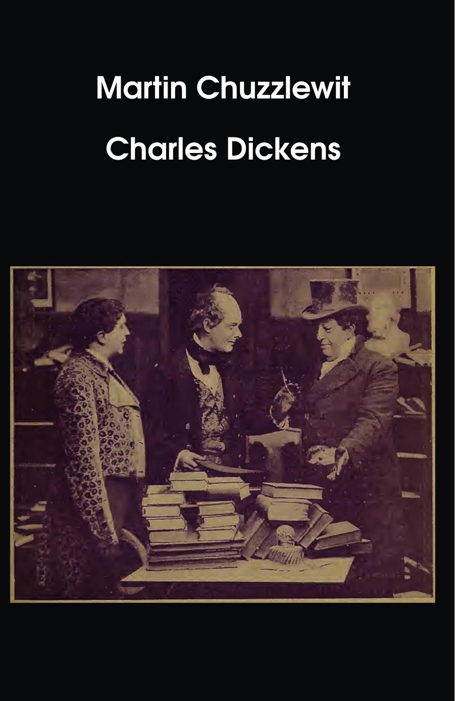

Martin Chuzzlewit
Charles Dickens
6"x9" paperback, 762 pages
We are gathered here today, in these majestic halls of old
To honor a man they call Sathington Willoughby
There's a joke or two, a pun or three, I feel that must be told
Then I go on to speak of Sathington Willoughby
Sathington Willoughby, the legislator that penned us up a bill
That banned the use of certain things like this and that
- Primus
Not going to lie. This book is a slog. All the characters have terrible and distracting Dickens names. Any modern reader will inevitably find themselves dismayed at the mind-numbing experience of reading the names Chuzzlewit and Pecksniff over and over. Taking inspiration from J.G. Ballard’s The Atrocity Exhibition, we at Dull Boy Classics decided to try and fix this issue by changing those names every time they came up to something new. Basically we wrote a Dickens name generator and replaced every instance of “Chuzzlewit” or “Pecksniff” with another random Dickensian surname still recognizably similar to the original. If you’re ever forced to actually read this book, your brain will thank you when every paragraph you’re presented variations such as “Snuzzlepit” or “Dickwhiff”. And at 762 sturdily-bound pages, this is heavy enough and compact enough to survive being hurled into the wall a few times in frustration!